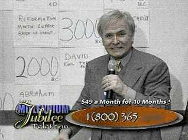
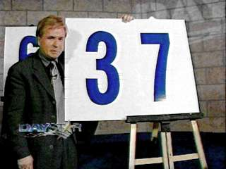
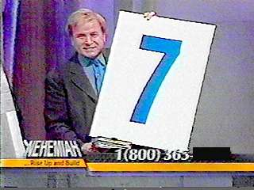
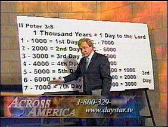
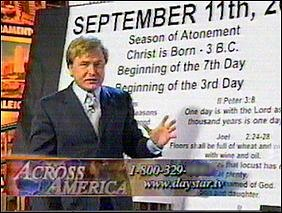

In 1998 Israel celebrated its 50th Anniversary as a nation, and at that time huckster Steve Munsey, on behalf of LeSEA ministries, used the opportunity to exploit that event by promoting it as a 50th, or Jubilee year, when God was prepared to cancel financial debts and bless his people with the riches they had waited for so long. This was an opportunity not to be missed. Of course the only thing holding up this windfall was the need to give your seed money to LeSEA. Only then could God bless you with the unlimited riches he was fixin' to pay out.

Steve Munsey - Jubilee Telethon 2000 - © 2000 LeSEA
Well, January of 2000 was telethon time again for LeSEA, and lo and behold - what do you know, the Catholic Church (the Pope no less), has declared the year 2000 a Jubilee year, and that beginning this year the church will no longer be in poverty! Well if the pope declared it, it must be true. What a stroke of luck for LeSEA! Now, once again, Steve Munsey claims the Lord has spoken directly to him, and God wants to bless his people with vast riches on this 7th millennium Jubilee year too! He says we are about to receive the greatest financial miracle in the history of mankind. But again, the only way to cash in on what God is fixin' to do, and dramatically change your life forever, is to send your 7 x 70 dollars to LeSEA, then you can expect your own financial miracle within days. Your days of riches and power are now! Fortunately, there is more than one way to win. You can send your "law of release" offering of 49 dollars a month for 10 months, or 70 dollars for 7 months, either is a lucky winning combination in this "spirit of 7" year. Imagine that, God has told Steve Munsey the secret magic numbers that will pay off with big money! But if you keep your hand closed (don't give to LeSEA) you cannot receive a blessing. God has blessed a women with 800 million dollars from a father she did not know, and this is about to happen all over the world. In fact, if you do sow your seed money with LeSEA, you will soon become so wealthy that you will be able to loan large sums of money to your friends, but only if you take advantage of this period of 7 jubilee release offer NOW!
God is being promoted something like the ultimate lottery, roulette wheel or slot machine that is fixin' to pay off soon, but you can't win if you don't play. As for LeSEA, well who knows, Steve Munsey says they just might decide to buy CBS TV (probably with the money you send in). Just imagine what they could rake in with all those CBS stations to run more telethons from. It boggles the mind!
What a disgrace! It really is amazing the depths some ministries will sink to in order to extract money from their viewers. Had you tuned to LeSEA World Harvest TV during this telethon, you would have seen snake oil salesmanship at its finest, or should I say at its lowest. You see, Steve Munsey has no idea if this year is the beginning of the seventh millennium, or last year was, or if it will be next year or ten years from now. Nobody knows this for certain. It would not matter if we did know the exact year the 7th millennium would begin. But don't let the facts get in the way of a good sales pitch. It makes one wonder just how they will come up with another Jubilee, to flog for all its worth, in another year or two. Or maybe that horse will be dead by then, because their audience will be wise to the con. Then Steve Munsey and LeSEA will have to come with some new gimmick to fleece the viewers.
DAYSTAR'S FALL 2000 TELETHON
 |
 |
| Steve Munsey on the Daystar Fall 2000
telethon Images © 2000 by Daystar |
|
We did not have to wait very long for Steve Munsey to resurrect his 7th millennium gimmick. He appeared on Daystar's Fall telethon on October 16th and announced God had revealed a rhema word to him. We are not yet in the new millennium. The year 2000 was celebrated only by Americans as the beginning of the new millennium, but actually, the new 7th millennium begins at midnight on December 31st, 2000.
Also, Steve noted that on the third day of creation, God twice said that it was good. So, by this and other equally preposterous evidence, there is allegedly a "double portion" blessing fixin' to happen to the people of God on the coming third day. Because 2001 will be the "third day" since the birth of Christ (1000 years is a day), and simultaneously the 7th millennium since creation, the magic number for your seed money is now 37, so, give $37 dollars a month for 10 months, and you will receive a "double portion" blessing on your finances in the new millennium. In addition, your unbelieving children will be saved, and you will have your life extended 15 years by the "Hezekiah miracle" (2 Kings 20:5-6). But obviously, if you don't give your seed money now in faith, you will likely not receive these miracle blessings.
God told Steve Munsey to fill 6 large pots with pledge slips, representing the water pots of Christ's first miracle (which happened on the third day, John 2:1) and also had donor's names written on the outside of the pots. At the conclusion of the program, during prayer, he then smashed the water pots on the floor to "release" the breakthrough "double portion" blessings for those who had been obedient and given donations to Daystar.
LeSEA's FALL 2000 TELETHON
|  | |
| Steve Munsey on the LeSEA fall 2000
telethon Images © 2000 by LeSEA |
|
Steve Munsey repeated his frenetic high-pressure seventh millennium / third day performance, and broke an additional 6 water pots, this time for LeSEA's fall Nehemiah telethon broadcast from New Orleans on November 6th, 2000.
DAYSTAR'S SPRING 2002 TELETHON
Well God has again spoken to Steve Munsey so that he can give a prophetic utterance to us. I'll bet you just can't wait to know what secrets have been revealed to Steve. Just how do you think one might work the terrorist attacks of September 11th, 2001 into a Daystar telethon to raise money? Well you see, according to Steve, Jesus Christ was actually born on September 11th of 3 B.C., and Satan hates that date so much that he caused the antichrist terrorist attacks on 9-11-2001 so that the attention of God's people might be diverted from the season of blessing that God is fixin' to bestow on His people in the next few months, during the Spring of 2002. God is fixin' to touch your business, your finances, your children and your health in the coming months if you are willing to sow your "seed" money in the fertile ground of Daystar TV now! You see, a double blessing is coming upon those who contribute to Daystar in this year of double completeness! It's a year of double completeness because 2001 in the season of Atonement (Sept-Oct) began the 7th millennium since creation, and 2001 was also the beginning of the 3rd millennium since the birth of Christ.
WOW! Amazing! Could it be true? Well, please note that this is the second time that Steve has changed the start date of the 7th millennium so that he can continue to use it in telethons to raise money. Previously he had changed it from December 31st of 1999 to December 31st of 2000, now he says the 7th millennium actually began on September 11th of 2001!
Now according to Steve, we don't really know from God exactly when the 7th millennium began, but Satan surely marked its beginning with September 11th, so that is how we know without doubt, because Satan gave September 11th of 2001 his stamp of evil attack! So, since we are only now entering the new 7th millennium, if you will faithfully pledge to give $37 dollars a month for 12 months to take advantage of this 3rd day/7th day opportunity, God will know he can trust you and bless you accordingly.
|  |  |
| Steve Munsey on the Daystar
Spring 2002 telethon Images © 2002 by Daystar |
|
One problem with the above. If as Steve says, Jesus was really born on September 11th of 3 B.C., then precisely how long has it been since that day? You would have to add 3 years to 2002, making it actually no less than the year 2005. So if God was planning on blessing His people in the initial year of the seventh millennium (2001), then that was at least four years ago!
But wait! Historians who have studied the subject tell us that King Herod died in the Spring of 4 B.C. shortly after a partial eclipse of the moon. Remember Herod? When he heard that the Christ child was born, he sent his soldiers to slay every infant under 2 years old in Bethlehem (Mat 2:16). Well, if Herod died in 4 B.C., then Jesus could not possibly have been born in 3 B.C., but rather in 5 B.C. or earlier. That would, if correct, mean that the 7th millennium likely started back in 1996!
So, has God really spoken to Steve Munsey, and given him the secret prophetic word about the 7th millennium, the key to wealth and health? In my opinion, heaven must surely weep at crass displays of theatrics, con games, greed and deceit to raise money in the name of God. But you be the judge. Scripture clearly warns us about false prophets and some of those claiming to be working in the name of God:
Jer 14:14 Then the LORD said unto me, The prophets prophesy lies in my name: I sent them not, neither have I commanded them, neither spake unto them: they prophesy unto you a false vision and divination, and a thing of nought, and the deceit of their heart.
Mat 7:20 Wherefore by their fruits ye shall know them.
Mat 7:21 Not every one that saith unto me, Lord, Lord, shall enter into the kingdom of heaven; but he that doeth the will of my Father which is in heaven.
Mat 7:22 Many will say to me in that day, Lord, Lord, have we not prophesied in thy name? and in thy name have cast out devils? and in thy name done many wonderful works?
Mat 7:23 And then will I profess unto them, I never knew you: depart from me, ye that work iniquity.
DAYSTAR'S FALL 2002 TELETHON
On Wednesday, 18 September, and Thursday 19 September, 2002, during their fall CELEBRATION SHARATHON, DAYSTAR repeatedly rebroadcast Steve Munsey's high pressure fund raising performance from the Spring 2002 ACROSS AMERICA telethon (discussed above), in which he many times stated that it was a live broadcast, yet there was no indication at all on the screen that it was in fact a taped program some six months old. I ask you, isn't it less than honest to do that?
DAYSTAR'S SPRING 2003 TELETHON
Daystar dusted off their video tape and rebroadcast Steve Munsey's money raising performance from the Spring of 2002 on April 24th and 25th of 2003, again without an indication on the screen that it was a year old prerecorded telethon. Viewers tuning in to the program in progress might be easily deceived into thinking it was a live program, since Steve Munsey said it was live, repeatedly. But then, as long as playing this tape makes even more money for Daystar, who really cares that the viewers have been misled this way? Apparently Daystar doesn't think it important to be completely up front and honest with their viewers when raising money.
2006 - THE LAW OF SIX
Who could have guessed it? God has revealed to Steve Munsey, during a 21 day fast, that 2006 is the sixth year of the new millennium, which means that God's law of six applies, and He is fixin' to bless you with a double portion. But in order to be a winner in this number game, guess what you have to do? That's right, you can't expect a harvest if you don't sow a seed. You see, there are supposedly 232 instances of the law of six in the Bible, and if you expect to be a winner under the law of six, you will have to send in your donation. Both Benny Hinn (Jan 23, 2006), Paula White (Aug 21, 2006), and TBN's fall 2006 telethon, have had Steve Munsey as a guest on their programs to promote this law of six fundraising scheme. Well as we have seen, God has a habit of telling Steve Munsey the secret winning numbers that will make you rich: for TBN this is $60, $600, or $6000 a month for 10 months! Who can doubt this?
FLEECING THE PASSOVER SHEEP 2007
Steve Munsey is on the road again with his traveling fundraising huckster show, appearing again with Paula White. Now he is promising seven supernatural blessings from Exodus 23 for those who know how to release the favor of God. Let's see, 7 blessings. Hmmm, what might be the winning secret number this time? Well if you guessed $77 dollars, you are well on your way to a windfall from heaven. What does your $77 dollars get you?
1. God will assign an angel to you.
2. God will be an enemy to your enemies.
3. God will give you prosperity.
4. God will take sickness away from you.
5. God will give you a long life.
6. God will bring increase and inheritance.
7. God will give a special year of blessing.And a communion set for two!
Wow! Angels are for hire, and God Himself will fight your enemies (but only after your VERY BEST Passover offering has cleared the bank for Paula White's ministry). God is depicted as the ultimate mercenary.
2007 - THE YEAR OF SEVEN
Well, how lucky we are, that $77 dollar offering you make, or $770, or $7700 dollars to Paula White are a perfect match with this year of spiritual completeness and perfection. I'll bet you didn't know how many lucky sevens that there are to be found in the Bible, well Steve and Paula apparently do, and all those sevens mean big money! Imagine what a hundred fold return would be. Just think, Paula White can use this program all year long to part the sheep from their money!
2 Pet 2:3 And through covetousness shall they with feigned words make merchandise of you: whose judgment now of a long time lingereth not, and their damnation slumbereth not.
 http://biblelight.net |